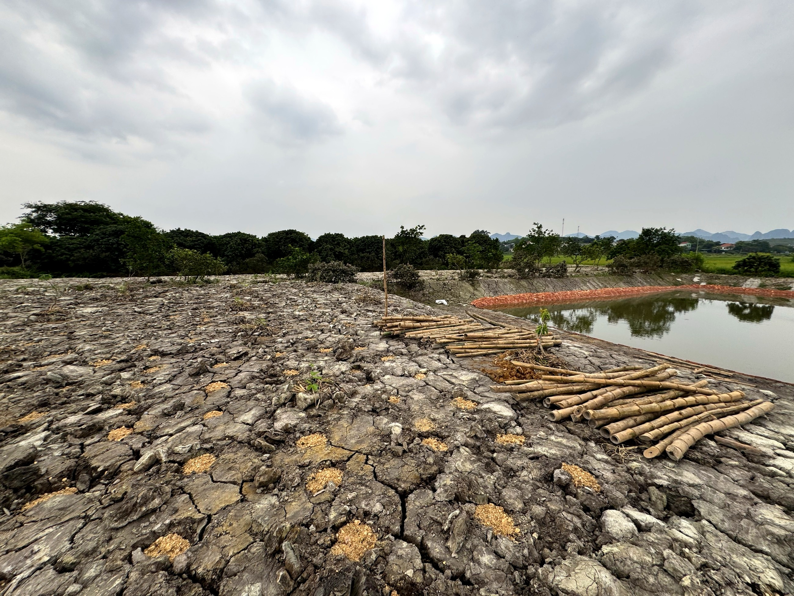
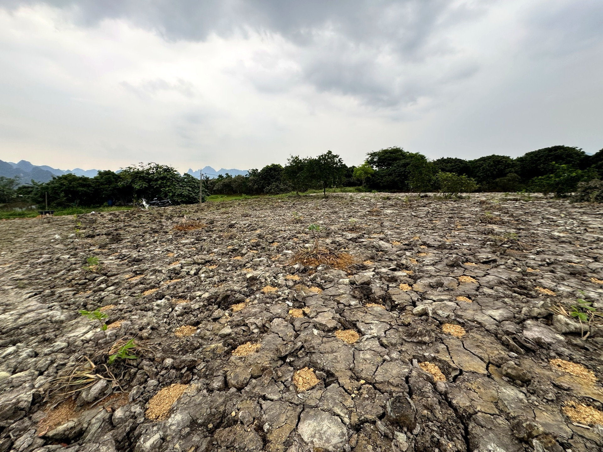

Loại hìnhTypeType
Ẩm thực · đặc sảnLocal Cuisine · SpecialtiesGastronomie Locale · Spécialités

Đồi Dược Liệu Rộc Éo là điểm đến mang giá trị di sản phi vật thể hiếm có của Mường Cốc – nơi hai lương y người Mường, bà Châm và bà Phận, đã và đang gìn giữ nghề thuốc Nam gia truyền qua nhiều thế hệ. Trên vùng đồi thuộc thôn Rộc Éo, các bà chăm sóc vườn dược liệu với hàng chục loài cây thuốc bản địa được thu hái và sử dụng trong các bài thuốc cổ truyền người Mường từ đời này sang đời khác.
Đây không chỉ là vườn cây thuốc đơn thuần mà còn là không gian tri thức dân gian sống – nơi du khách được ngồi trò chuyện cùng hai lương y, được dẫn qua từng luống cây thuốc, được nghe kể về công dụng, cách nhận diện và phương pháp bào chế của từng loại thảo dược theo bí quyết Mường. Trải nghiệm tại đây mang chiều sâu văn hóa đặc biệt, phù hợp cho những ai muốn tìm hiểu tri thức y học dân gian của tộc người Mường.
Roc Eo Medicinal Herb Hill is a destination of rare intangible heritage in Muong Coc – where two Muong traditional healers, Mrs. Cham and Mrs. Phan, have preserved the ancestral Southern medicine craft for generations. On the hill in Roc Eo village, they tend a medicinal garden with dozens of indigenous herbs, harvested and used in traditional Muong remedies passed down through the ages.
This is not merely a medicinal plant garden, but a living space of folk knowledge – where visitors can converse with two traditional healers, be guided through each herb bed, and hear about the uses, identification, and preparation methods of each herb according to Muong secrets. The experience here offers a special cultural depth, suitable for those wishing to explore the folk medical knowledge of the Muong people.
La colline des herbes médicinales de Roc Eo est une destination au patrimoine immatériel rare à Muong Coc – où deux guérisseuses traditionnelles Muong, Mme Cham et Mme Phan, ont préservé l'art ancestral de la médecine du Sud à travers les générations. Sur la colline du village de Roc Eo, elles entretiennent un jardin médicinal avec des dizaines d'herbes indigènes, récoltées et utilisées dans les remèdes traditionnels Muong transmis de génération en génération.
Ce n'est pas seulement un jardin de plantes médicinales, mais un espace vivant de savoir populaire – où les visiteurs peuvent converser avec deux guérisseurs traditionnels, être guidés à travers chaque parterre d'herbes, et entendre parler des usages, de l'identification et des méthodes de préparation de chaque herbe selon les secrets Mường. L'expérience ici offre une profondeur culturelle particulière, adaptée à ceux qui souhaitent explorer les connaissances médicales populaires du peuple Mường.
| Tham quan vườn dược liệuWander through the medicinal herb gardenFlânez dans le jardin de plantes médicinales | Hướng dẫn nhận diện cây thuốc Nam bản địaGuided identification of indigenous Vietnamese medicinal plants.Identification guidée des plantes médicinales vietnamiennes indigènes. |
| Trò chuyện với lương yChat with a traditional healerDiscutez avec un guérisseur traditionnel | Giao lưu, tìm hiểu tri thức y học dân gian người MườngConnect with locals and delve into the fascinating world of Mường traditional folk medicine.Connectez-vous avec les habitants et plongez dans le monde fascinant de la médecine populaire traditionnelle Mường. |
| Ươm cây thuốcMedicinal Plant NurseryPépinière de plantes médicinales | Trải nghiệm ươm và chăm sóc cây dược liệuExperience planting and caring for medicinal plantsExpérience de plantation et de soin des plantes médicinales |
| Tìm hiểu bài thuốc cổ truyềnDiscover traditional herbal medicineDécouvrez la médecine traditionnelle à base de plantes | Nghe giới thiệu về công dụng và cách dùng thảo dượcListen to an introduction on the uses and preparation of herbs.Écoutez une introduction sur les usages et la préparation des herbes. |
| Đón khách đoàn nhỏHost Small GroupsAccueillez les petits groupes | Nhóm nhỏ theo đặt trước, có hướng dẫn của lương ySmall groups by reservation, with guidance from a traditional healer.Petits groupes sur réservation, avec les conseils d'un guérisseur traditionnel. |


Đồi Dược Liệu Rộc Éo hướng tới bảo tồn và phát huy tri thức y học dân gian người Mường như một tài nguyên di sản phi vật thể có giá trị cao trong phát triển du lịch cộng đồng Mường Cốc. Trong tương lai, điểm đến mong muốn xây dựng bộ tài liệu giới thiệu cây thuốc bản địa bằng ngôn ngữ phổ thông để lan tỏa tri thức này đến cộng đồng, đồng thời phát triển thêm sản phẩm thảo dược chế biến sẵn phục vụ du khách. Điểm đến Du lịch cộng đồng Mường Cốc, Xã Mỹ Đức – Thành phố Hà NộiĐồi Dược Liệu Rộc Éo aims to preserve and promote Mường folk medicine knowledge as a valuable intangible heritage resource for Mường Cốc community tourism development. In the future, the destination plans to create accessible documentation introducing indigenous medicinal plants to spread this knowledge to the community, while also developing ready-to-use herbal products for visitors. A Mường Cốc Community Tourism Destination, My Duc Commune – Hanoi City.Đồi Dược Liệu Rộc Éo vise à préserver et à valoriser les connaissances de la médecine populaire Mường en tant que ressource de patrimoine immatériel de grande valeur pour le développement du tourisme communautaire de Mường Cốc. À l'avenir, la destination souhaite élaborer un ensemble de documents présentant les plantes médicinales indigènes dans un langage accessible pour diffuser ces connaissances à la communauté, tout en développant des produits à base de plantes transformées pour les visiteurs. Une destination de tourisme communautaire de Mường Cốc, commune de My Duc – ville de Hanoi.